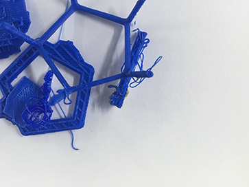
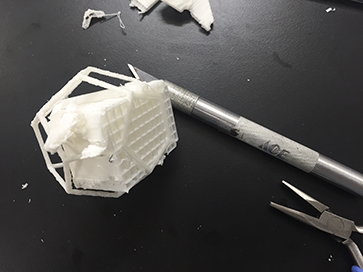
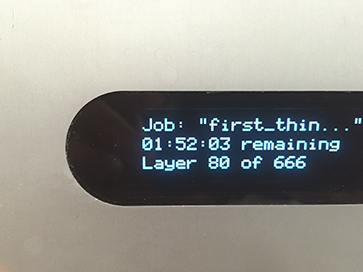
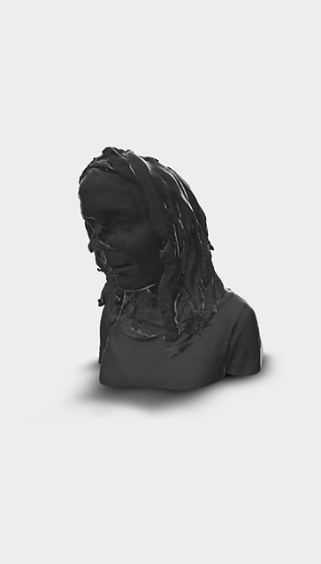
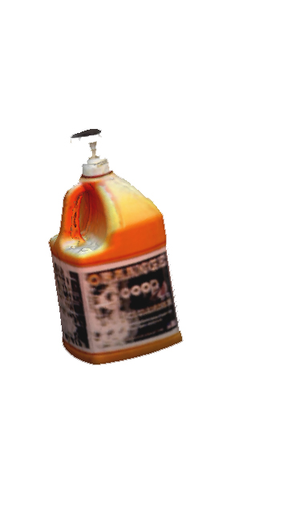
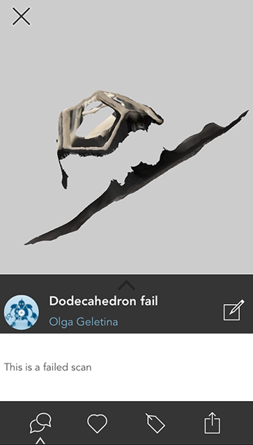
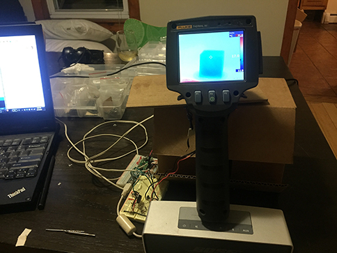
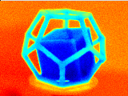
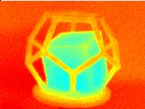

Week 3
To-do:
Design and 3D print an object that could not be made subtractively
3D scan an object
Make a scanner
graphine: allotrope of carbon in the form of two dimensional, honey-comb lattice on atomic scale. It is about 100 times stronger than steel, conducts electricity and is nearly transparent
CIE Color Space: characterizes color by a luminesce parameter and two color coordinates. The system offers a more effective way of color measurement than euclidean based approaches
hygrophilic: preferring moist habitats
Catalan surface: spiral-looking surface all of whose planes are parallel to a fixed plane
geodesic: applying the notion of a straight line to curved spaces, used to mean the shortest distance between two nodes on the Earth's surface
Polylactic acid (PLA): biodegradable polyester typically made from corn starch, tapioca roots, or sugarcane. PLA has one of the highest bioplastic consumption volumes in the world
Acrylonitrile butadiene styrene (ABS): thermoplastic polymer, is amorphous and doesn't have a true melting point, can be carninogenic at higher temperatures (~400 °C)
Stereolithography: uses a laser beam to 3D print layer by layer from a liquid polymer that hardens on contact
Continuous Liquid Interface Production (CLIP):photochemical process involving uncured resin, exposure to oxygen, and a light source - it is said to be very fast
I returned to the same shape for this week's assigment, taking it a step further I designed (using Rhino) a dodecahedron illustrative of the fact that a cube can be constructed from its vertices (Steinhaus 1999). I used the Formalabs and 3DWOX to make models at different scales. The first couple of attempts were trying – not enough support, too little resin, excessive support, etc.
- 
- 
- 
Scan
Scanning an object posed its own set of challenges. Sense didn't seem to respond particularly well to my attempts of scanning a bust or small objects (about the size of a handful or less). However it did scan a bottle of Goop soap nicely (inserting an extra "o" for good measure). My dodecahedron didn't pass the Sense size threshold, so I tried to capture the shape using 123D Catch which did not turn out particularly well either.
- 
- 
- 
Scan some more
This 3D heat scan was created in a collaboration with James Penn, a wizard of sorts. The idea behind it was to draw on the visuals heat produces as well as to scan a feature that extends beyond what is visible to the naked eye.
Our set-up included a stepper motor, two breadboards, an arduino, mystery electrical components, and a couple of glasses of whiskey.
- 
- 
- 